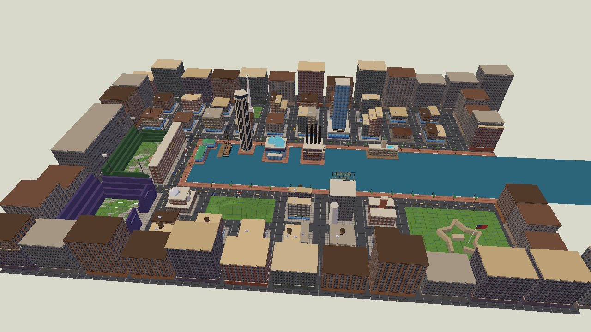
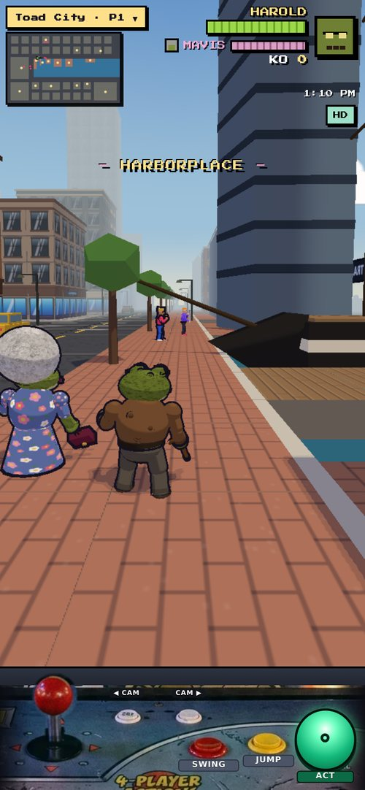
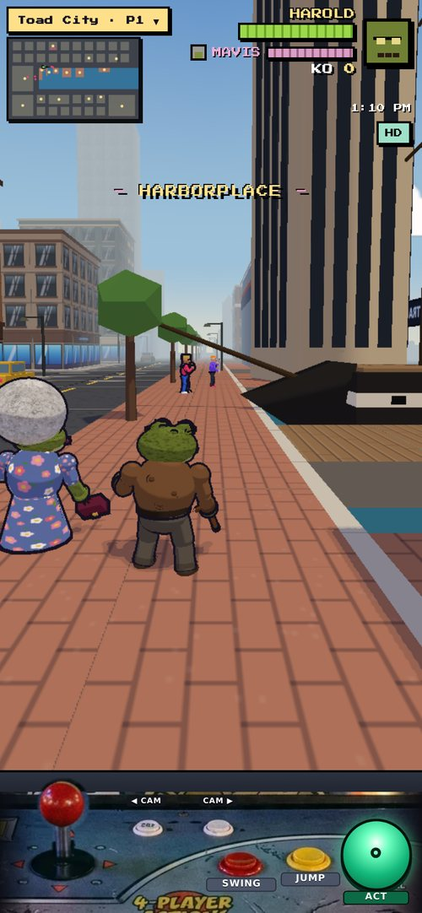
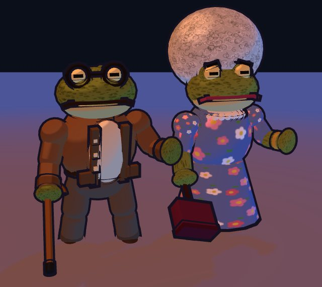
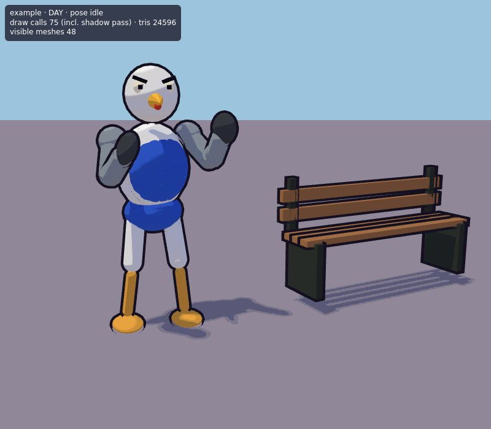
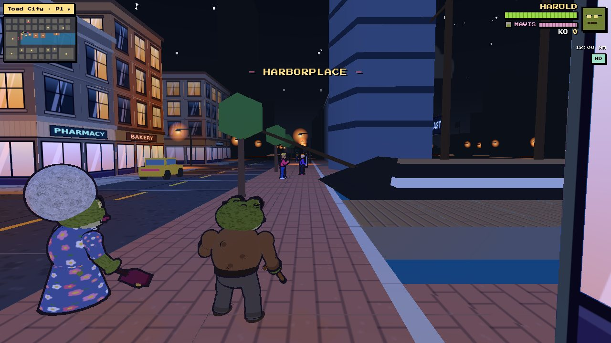
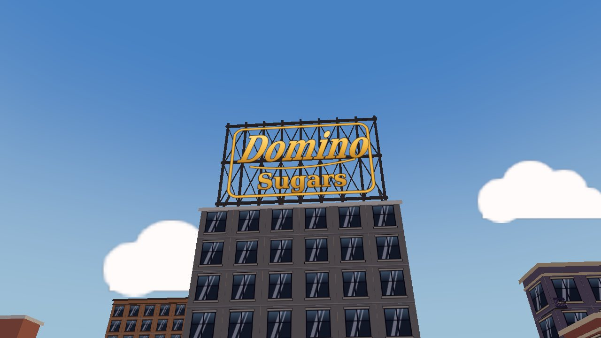

TOAD CITY BALTIMORE · OUTSIDE-AI BRIEF · GEMINI PRO
QA review: style, budgets and acceptance for all four tasks
Reviewer role · pass/fail per asset with specific fixes · Tasks A, B, C and D
Recommended setting. Use Gemini Pro (the newest Pro model available to you) with thinking set to high. You are the QA reviewer: you do not build. Review one delivery zip at a time (its code, README and preview PNGs) and return a pass/fail list with specific numbered fixes per asset, using the rubric in section 5.
Prepared for Brad Parlette, 11 October 2026. Everything is built procedurally in code; real Baltimore signage is redrawn on canvas, never copied from logo files. The starter kit (toadcity_kit.js, viewer.html and two example modules) comes as toadcity_starter_kit.zip. Its core is printed in the appendix in case the zip is missing.
Contents
1 · Project overview3
2 · Style guide and quality bar5
3 · Code starter and interface7
4 · Acceptance checklists and budgets (A–D)10
5 · Review prompt and scoring rubric14
6 · Review workflow16
1 · Project overview
Toad City Baltimore is an open-world, cel-shaded street brawler set on Baltimore's Inner Harbor, built for phones first. You play Harold, an elderly toad with a cane. His wife Mavis (grey afro, floral dress, a handbag she swings) fights beside you under AI control. Together you clear crime out of each district around the harbour. Each landmark district has a set-piece fight and a boss, and the final boss is Mister Formstone. The real map is compressed about 3×: landmarks sit about one block apart, with a 6 m brick promenade along the water and land about two blocks deep. Day turns to night every 5 minutes (a 600 s loop), and at night the windows, street lamps and neon light up.

City overview, day: the harbour basin, the street grid and the landmark massings (in-house). Night lights about 45% of windows and warm lamps along the promenade.

iPhone portrait 390×844: the game view above the arcade control panel.

The arcade panel (ball-top stick, round buttons, big ACT button). Assets must read in the view above it.
Tech stack
three.js r160 with plain ES modules. The game source is a set of src/*.js files that a shell script concatenates into one module (game.js). There is no bundler and no framework.
Everything procedural: geometry comes from three.js primitives in code, and every texture is drawn on a <canvas> at load. There are no image, model or font files to license. Audio is separate (not part of this work).
Look: MeshLambert plus a 3-band toon ramp injected with onBeforeCompile, vertex colours, inverted-hull ink outlines and PCF soft shadows from one sun. A ?retro=1 32-bit mode exists, but the kit is HD-only and that is what you deliver for.
How deliveries plug in: each module is a file that receives the kit object K (the same functions the game uses). In-house, we strip the export keywords, append the file to src/, bind K to the game's globals and register the build function in the gang, boss, prop or vehicle tables. If your module runs in the kit viewer, it runs in the game.
Target devices and performance budgets
The main target is an iPhone in portrait, 390×844 CSS px at DPR 2 (the game view is the tall area above the arcade panel), plus desktop Chrome and Safari. Aim for 60 fps, with a 30 fps floor on a mid-range iPhone. Current city frames measure 76–168 draw calls and 99k–346k triangles at five spots (day, 390×844, including the shadow pass), so new assets must be lean.
Budget
Limit
Notes
Whole frame (iPhone)
≤ 250 draw calls, ≤ 400k tris
Includes the shadow pass. The in-house team owns this number; your assets must not blow it.
Reference: Harold / Mavis
60 / 54 parts · 14.0k / 15.7k tris
Measured in the kit viewer. Each part is a mesh plus an ink hull.
Reference: current thug
26–33 parts · 7.6k–8.5k tris
Two materials (one toon plus the shared outline).
New gang member (Task C)
≤ 40 parts · ≤ 12k tris · ≤ 3 mats
Far LOD (opts.lod = 1): ≤ 14 parts, ≤ 3k tris, no fine detail.
Boss (Task D)
≤ 70 parts · ≤ 22k tris · ≤ 4 mats
One boss on screen at a time.
Rowhouse kit (Task A)
house ≤ 2.5k · corner ≤ 3.5k · block ≤ 30k tris
Merged: a full block is ≤ 4 draw calls. One 1024² atlas for the whole kit.
Static props (Task B)
120–2,500 tris each
Merged into the chunk, so they add no draw calls. Per-prop limits are in the task.
Vehicles (Task B)
600–6,000 tris · 3–12 meshes
Their own Group, so they move. At most 2 materials each.
Textures
canvas only · ≤ 1024² atlas · ≤ 256² per character map
Drawn in code at load; mipmapped in HD.
Merged geometry and shared materials: the static city is written into merged builders, each 64 m chunk being one toon mesh, one outline hull, one glow mesh and one decal mesh, and the chunks are frustum-culled. Characters are groups of parts that share one toon material per rig. LOD the game already does: thugs beyond 24 m drop their ink hulls and stop casting shadows, and beyond 48 m they sleep (hidden). Hulls must therefore be BackSide ShaderMaterial children so this code can find them.
Coordinates and scale
Item
Value
Item
Value
Units / axes
metres · Y up · X east · Z south (north = −Z)
Facing at yaw 0
+Z (characters, vehicles, house fronts)
City block
24 × 24 m
Street
10 m wide (grid period 34 m)
Promenade
6 m brick strip on every water edge
Kerb / pavement top
CURB = 0.16
Ground floor / upper floor
GF = 4.4 / FH = 3.4
Parapet
PAR = 1.3
Water surface
WY = −0.85
Render chunk / collision cell
64 m / 16 m
World bounds
x −136…213, z −106…104
Harbour basin
x −60…400, z −30…30
Harold / Mavis
about 1.6 m / about 2.0 m (afro)
Thug / bruiser
about 2.0 m / ×1.2
Signage rule. Brad wants the city to look like the real Inner Harbor: storefronts, signs and props may use real Baltimore businesses' names and sign styles where they really exist (Phillips Seafood, Barnes & Noble and Hard Rock Cafe at the Power Plant, the water-taxi branding, Natty Boh-style corner-bar signs, Utz, Old Bay). The neon sign in section 2 shows how: the real script wording redrawn on canvas, never a copied logo file or photo. Bosses and thugs stay original characters (no real people).
Readability on a phone: silhouettes must read at 6–10 m on a 390×844 screen; exaggerate key shapes by 10–20% (heads, hands, cornices, stoops, lamp heads); give each gang, district or vehicle one accent colour; check every asset in both the day and the night preset before delivery.
2 · Style guide and quality bar
Everything you deliver must look like it belongs next to Harold and Mavis below. These are the asset starters: renders of the real game models through the kit viewer you were given. They are the quality bar.
Harold and Mavis, day preset: chunky primitives, warty skin map, floral and curls maps, three hard cel bands, ink hulls.

The same at night: hemisphere and sun drop, a warm lamp and a cool camera-side fill keep the characters readable.
The current thugs (to be replaced by Task C gangs): readable but plain. Your work must reach Harold-level detail.

The kit examples: a gull thug (character interface) and a bench (prop interface, with an atlas decal). The readout shows the budget check.
Palette
#14101f INK: outlines, black
#6f7f34 Harold skin
#b8b47a Harold throat
#7a5232 Harold cardigan
#5e3e24 cardigan trim
#5a5248 Harold slacks
#7f8f3e Mavis skin
#5f73b0 Mavis dress base
#f08ab0 floral pink
#c8c6c2 Mavis afro
#6a1f3a handbag
#c8a040 gold: clasp, bangle
#e8d888 toad eye gold
#ff3d6e accent pink-red
#7b4dff accent violet
#ff9f1c accent orange
#23c26b accent green
#2f5bd3 accent blue
#ffd23c accent yellow
#1fd3c6 accent teal
#8a4a3a red brick
#6f6a62 grey stone
#9a6a44 tan brick
#5a4f5c plum
#4f5a52 green-grey
#a4907a sandstone
#c9b48a trim cream
#eae6dc marble stoop
#ffa050 lamp light
#ffe08a lit window
#ff3a1c neon red
#c8d0ff night camera fill
Use mid-value base colours, because the toon ramp multiplies them by 0.46, 0.78 or 1.06. Never use pure #000 or #fff: use INK #14101f for black and at most #f2f2f2 for white. Shadows are tinted slightly cool.
Toon ramp (cel bands)
The lighting ratio r (lit luminance ÷ base luminance) is snapped to three bands: shadow 0.46 (r below 0.38–0.44), mid 0.78 and lit 1.06 (r above 0.86–0.92). Edges are hard (smoothstep over 0.06).
The shadow band is tinted by (0.88, 0.86, 1.10) at 50%. Strong local light (r above 1.35, such as a lamp at night) passes through unbanded.
A hit-flash uniform mixes the whole rig to white (mat.userData.flash). Every sub-material of a rig must share it.
Ink outlines
The outlines are inverted hulls: back faces of the same geometry pushed out along a mitred vertex direction (odir, from addOdir()), coloured INK #14101f.
Width = uW × camera distance, with the distance clamped to 2.5–36 m. Characters 0.0042, city 0.0034, props 0.0030. That gives a near-constant 2–3 px line on a phone, which fades into the fog colour with distance.
Only major masses get hulls. Use outline: false on parts thinner than about 4 cm (characters) or 6 cm (buildings), and on flat decals. Never use screen-space edge detection.
Night lighting rules
Preset
Sky / fog
Hemisphere (sky / ground, intensity)
Sun (colour, intensity, direction)
Day
#9cc4dc / #b4c0c6
#dfe6ff / #8a7f74, 1.45
#fff3dc, 2.1, (−0.5, 1.7, 0.42)
Dusk
#b0706a / #8a6060
#ffb08a / #5a4040, 0.85
#ff9a58, 1.25, (−1, 0.32, −0.25)
Night
#0a0f1a / #0b0f17
#4a5a88 / #14141c, 0.32
moonlight #8aa0e8, 0.45, (0.45, 1.2, −0.9)
NIGHT (0 for day to 1 for night) drives every glow. Windows light by a stable seeded hash (about 45% lit, warm #ffe08a/#ffbf3c). Shop glass, signs and neon always glow.
Street lamps are warm orange #ffa050: additive glow pools on the ground, billboard halos, and 4 pooled point lights (intensity 16, range 15 m) that follow the hero. Assets never add their own lights; they register lamp points instead.
A cool camera-side fill (#c8d0ff, 3.2) keeps characters readable at night. Do not make character bodies emissive; only intentional glow parts (a ghost, crystals, sparks) may glow.

Night street (in-game): lit windows, lamp pools and shop signs (current placeholders; real Baltimore signs are now wanted).City at night: about 45% of windows lit, warm promenade lamps.

Neon sign quality bar, day: canvas-drawn lettering on a steel lattice.The same sign at night: red-orange neon, soft glow, water reflection streak.
3 · Code starter and interface
Every delivery is a drop-in JS module: no imports, one META, build functions that take K. Below is a real excerpt from the game, the opening of the thug builder exactly as it ships, followed by the kit examples that define the interface you must follow.
Real excerpt: how the game builds a thug (src/04_actors.js)
The pattern: one toonMat per rig → skeleton(d, mat) → part(joint, G.prim(…), colour, x, y, z, opts) on each joint → J.head group under J.neck → J.kind → return J. The game wraps J in a Fighter (position, yaw, HP, AI), drives the joints with the pose tables and flashes J.mat on hits.
K member
What it is (reuse it; do not re-create it)
K.THREE
three.js r160 namespace (the game's own instance)
K.toonMat(opts)
The cel-shaded Lambert material with vertex colours and hit-flash. One per character rig; sub-materials with a map copy its userData.flash and flashC.
K.basicMat(opts)
An unlit material for glow parts (opacity driven by K.NIGHT.value).
K.OUT_CHAR / OUT_PROP / OUT_CITY
The three shared outline hull materials (widths 0.0042 / 0.0030 / 0.0034).
K.G.sph / cap / box / cyl / tor
The primitive geometry makers. They pick HD segment counts for you.
K.part(parent, geom, colour, x, y, z, {rot, outline, mat, shadow})
Bakes the colour, adds the ink hull and casts shadows. The parent group must carry userData.mat.
Pose objects and helpers. K.THUG_POSES and K.HERO_POSES are the game's own animations.
K.place(geom, x, y, z, ry) · K.makeOut() · K.makeAtlas(tiles)
The static-geometry path: world placement, the merging collector (out.solid / glow / decal / coll / bld / lamp / hook / build) and the single canvas atlas.
The shared city materials, the day/dusk/night presets and the ink colour.
Character interface: example_gull_thug.js (complete)
// example_gull_thug.js — the SHAPE every delivered character module must follow (a tiny, deliberately plain example).
// No imports. Everything comes in through K (toadcity_kit.js). Forward is +Z, up is +Y, 1 unit = 1 metre, feet on y = 0.
export const META = { id: 'gull_lookout', gang: 'example', kind: 'thug', hp: 8, scale: 1.0, radius: 0.42, weapon: null };
export function buildGullLookout(K, opts = {}) {
const { G, part, grp, skeleton, toonMat, THUG_D } = K;
const mat = toonMat(); // ONE toon material per rig (the game flashes it white on hits)
const d = THUG_D, J = skeleton(d, mat); // same joint names + lengths => the game's thug poses drive it unchanged
const C = Object.assign({ body: '#e9ecef', wing: '#8d99a6', vest: '#2f5bd3', beak: '#f2b33d', leg: '#e0a040' }, opts.colors);
// hips + torso
part(J.hips, G.sph(0.22, 0.15, 0.17), C.vest, 0, 0.02, 0);
part(J.torso, G.sph(0.27, 0.33, 0.22), C.body, 0, 0.3, 0);
part(J.torso, G.sph(0.24, 0.26, 0.12), C.vest, 0, 0.3, 0.1); // the gang vest (front panel)
// head: round gull head, hooked beak with the red dot, mean brow
const head = J.head = grp(J.neck, 0, 0, 0); head.userData.mat = mat;
part(head, G.sph(0.19, 0.2, 0.2), C.body, 0, 0.2, 0.02);
part(head, G.cyl(0.0, 0.07, 0.24, 6), C.beak, 0, 0.17, 0.27, { rot: [Math.PI / 2, 0, 0] });
part(head, G.sph(0.025, 0.025, 0.025), '#d43a2a', 0, 0.14, 0.3, { outline: false });
for (const s of [-1, 1]) {
part(head, G.sph(0.045, 0.05, 0.03), '#f6f2d8', s * 0.1, 0.26, 0.16, { outline: false });
part(head, G.box(0.03, 0.03, 0.02), K.INK, s * 0.1, 0.26, 0.185, { outline: false });
part(head, G.box(0.1, 0.025, 0.03), K.INK, s * 0.1, 0.31, 0.17, { rot: [0, 0, s * 0.35], outline: false });
}
// arms are wings with feather-tip "hands"; legs are thin with webbed feet
for (const k of ['L', 'R']) {
part(J['sh' + k], G.sph(0.1, 0.1, 0.1), C.wing, 0, 0, 0);
part(J['sh' + k], G.cap(0.08, d.upper - 0.08), C.wing, 0, -d.upper / 2, 0);
part(J['el' + k], G.cap(0.07, d.fore - 0.08), C.wing, 0, -d.fore / 2, 0);
part(J['ha' + k], G.sph(0.06, 0.12, 0.1), '#3a3f46', 0, -0.05, 0);
part(J['lg' + k], G.cap(0.07, d.thigh - 0.1), C.body, 0, -d.thigh / 2, 0);
part(J['kn' + k], G.cap(0.04, d.shin - 0.1), C.leg, 0, -d.shin / 2, 0);
part(J['ft' + k], G.sph(0.12, 0.04, 0.17), C.leg, 0, -0.03, 0.06);
}
J.kind = 'thug'; J.meta = META;
return J; // return the rig: J.root (THREE.Group), J.mat, the 18 joints, J.head, J.d
}
Prop interface: example_bench.js (complete)
// example_bench.js — the SHAPE every delivered static prop / kit piece must follow.
// No imports. Write placed world-space geometry into `out`; the game merges it into its chunk meshes (3 draw calls per chunk total).
export const META = { id: 'bench_slat', kind: 'prop', footprint: [1.8, 0.6], height: 0.9 };
export function buildBench(K, out, x, z, ang = 0, opts = {}) {
const { THREE, place } = K, wood = opts.wood || '#9a6a44', iron = opts.iron || '#2c322e';
const P = (g, lx, ly, lz) => { g.translate(lx, ly, lz); return place(g, x, 0.16, z, ang); }; // 0.16 = kerb / pavement height
for (const [ly, lz, rx] of [[0.45, 0.0, 0], [0.45, 0.12, 0], [0.45, -0.12, 0]]) out.solid(P(new THREE.BoxGeometry(1.8, 0.05, 0.1), 0, ly, lz), wood);
for (const ly of [0.62, 0.78]) out.solid(P(new THREE.BoxGeometry(1.8, 0.1, 0.05), 0, ly, -0.22), wood);
for (const s of [-1, 1]) { out.solid(P(new THREE.BoxGeometry(0.06, 0.45, 0.42), s * 0.8, 0.22, 0), iron); out.solid(P(new THREE.BoxGeometry(0.06, 0.45, 0.05), s * 0.8, 0.7, -0.22), iron); }
// a painted back-plate via the kit atlas (draw it once per module, reuse it for every instance)
const atlas = buildBench.atlas || (buildBench.atlas = K.makeAtlas({ plate: { w: 256, h: 64, draw(c, w, h) { c.fillStyle = '#2f5a3a'; c.fillRect(0, 0, w, h);
c.strokeStyle = '#f2e6c8'; c.lineWidth = 4; c.strokeRect(6, 6, w - 12, h - 12); c.fillStyle = '#f2e6c8'; c.font = 'bold 30px Georgia, serif'; c.textAlign = 'center'; c.fillText('HARBOR PARK', w / 2, 43); } } }));
out.decal(P(new THREE.PlaneGeometry(0.9, 0.2), 0, 0.7, -0.19), atlas, 'plate');
out.coll({ x, z, r: 0.7 });
return META;
}
Rules that make code drop in
No import. No globals, no window, no DOM except canvas drawing inside texture or atlas functions. No Math.random() at build time (use a seeded LCG from opts.seed).
Characters return the rig J (bosses also export POSES and ATTACKS). Static pieces write only through out. Vehicles return { root, kind, seats, collider, waterline, animate }.
Facing is +Z, the base sits at y = 0 and units are metres. Materials come only from K. Never change toadcity_kit.js.
4 · Acceptance checklists and budgets (A–D)
These are the exact interfaces, budgets, checklists and "do not" lists the builders received. Judge each delivery against its own task only.
Task A: Baltimore rowhouse and city-block kit
Interface (must match exactly)
File names: src/rowkit_tiles.js, src/rowkit_rowhouse.js, src/rowkit_corner.js and src/rowkit_block.js.
export const META = { id: 'rowhouse', kind: 'kit', footprint: [4.8, 13], floors: [3, 4] };
export function buildRowhouse(K, out, atlas, x, z, ang = 0, opts = {}) {
// (x, z) = centre of the FRONT wall at pavement level; the front faces +Z rotated by ang. Base sits on K's CURB (0.16).
// Write only through: out.solid(geom, colour, outline?), out.glow(geom, colour), out.decal(geom, atlas, tileName),
// out.coll({x0,x1,z0,z1} | {x,z,r}), out.bld({x0,x1,z0,z1,h}), out.lamp(x,y,z), out.hook(type, data)
return { width, depth, height }; // so the block filler can pack houses
}
Geometry is placed in world space with K.place(geom, x, y, z, ry). out.build() merges everything into one toon mesh, one outline hull, one glow mesh and one decal mesh.
Night windows: each window pane goes through out.glow(paneGeom, colour), with roughly 45% lit chosen by the seeded RNG. Lit panes use warm #ffe08a / #ffbf3c; unlit panes are not written to glow (they stay as dark glass in out.solid). Shop glass and neon always glow.
out.bld() adds one camera-collision box per house. out.coll() gives the house footprint and each stoop. out.hook('climb', {x, z, ang, top}) marks one drainpipe or ladder per block for the CLIMB action.
Performance budget
One house ≤ 2,500 triangles, a corner building ≤ 3,500, and one full block ≤ 30,000.
Materials: only what out uses (K.CITY_MAT, the glow material and one kit atlas for the whole task). A full block must build to ≤ 4 draw calls (plus the shadow pass).
Outline hulls only on major masses (house box, stoop, cornice, bay edges). Use outline: false for anything under about 6 cm (mullions, bricks, trim strips).
Acceptance checklist
☐ All five pieces exist with the exact signatures. viewer.html?show=street shows two facing blocks across a 10 m street with a pavement, in day and night.
☐ Formstone, white marble stoops, bracketed cornices, painted screens, corner bar and corner shop are all present and recognisable.
☐ Both 3- and 4-storey variants exist, with at least 3 front types and at least 4 painted screen designs.
☐ Budgets are measured: house ≤ 2.5k, corner ≤ 3.5k and block ≤ 30k triangles; a full block uses ≤ 4 draw calls; there is one atlas in total.
☐ Night: about 45% of windows lit (seeded, stable on rebuild), with shop glass and neon glowing.
☐ Colliders, camera boxes and climb hooks are written. Nothing floats and nothing sinks below CURB.
☐ Same seed gives the same block; a different seed gives a visibly different mix.
☐ Signs read as real Baltimore: real names and sign styles only where they really exist or are typical, all drawn on canvas or built from geometry (no logo image files). LICENSES.md is present.
Do NOT
Do not model landmarks or any specific real building.
Do not use per-house materials or per-house meshes; everything goes through out.
Do not use image textures, logo files, or photos pasted as textures. Real names and sign styles must be redrawn on canvas.
Task B: Street props and vehicles
Performance budget
Static props: the per-prop triangle budgets in the table above. They add no draw calls, because they merge into the chunk.
Vehicles: the triangle and mesh budgets in the table. Use at most 2 materials per vehicle (the out materials plus one shared toonMat for moving parts), and no textures beyond the shared prop atlas.
Use one 1024² atlas for the whole of Task B (src/props_tiles.js exporting PROP_TILES) for signs, menus, livery text and the manhole ring.
Acceptance checklist
☐ Every prop and vehicle in the two tables exists with the exact signature and return shape.
☐ viewer.html?show=props shows all static props in a row on a pavement strip; ?show=vehicles shows every vehicle with animate() running (wheels spin, paddles stroke, the pony walks, boats bob on a water plane at WY).
☐ Budgets are measured and written in the README (triangles per prop; triangles, meshes and draw calls per vehicle). There is one atlas in total.
☐ Night previews show the lamp globes, headlights and signs glowing and readable.
☐ Seats line up with the hero rig (Harold is about 1.6 m tall), and the collider box matches the visible hull.
☐ Liveries and signs use real Baltimore names and styles where they really exist, all redrawn on canvas or built from geometry (no logo image files). LICENSES.md is present.
Do NOT
Do not embed logo image files or photos; recreate real lettering and liveries on canvas or in geometry.
Do not model landmark buildings or piers. The in-house team does those.
Do not use skinned meshes or GLTF. Do not add per-prop materials.
Task C: Thug gangs (5 district gangs)
Interface (must match exactly)
File: src/gang_<id>.js
export const GANG = { id: 'harbor_rats', name: 'Harbor Rats', animal: 'rat', district: ['harborplace', 'constellation', 'wtc', 'monument'],
accent: '#ffd23c', members: ['grunt_a', 'grunt_b', 'armed', 'bruiser'] };
export const META = { grunt_a: { hp: 8, scale: 1, radius: 0.42, weapon: null }, /* … */ bruiser: { hp: 16, scale: 1.2, radius: 0.55, weapon: null, big: true } };
export function buildHarborRat(K, member = 'grunt_a', opts = {}) { // opts: { lod: 0 | 1, seed, colors }
const mat = K.toonMat(); const J = K.skeleton(K.THUG_D /* or your own d with the SAME keys */, mat);
// … K.part(J.<joint>, K.G.<prim>(…), colour, x, y, z, { rot, outline, mat }) …
J.head = /* group under J.neck */; J.kind = 'thug'; J.meta = META[member];
return J;
}
Use the 18 joint names from K.skeleton(): tilt, hips, torso, neck, shL/R, elL/R, haL/R, lgL/R, knL/R, ftL/R and swL/R. The game animates them with K.THUG_POSES (idle, run, windup, attack, hurt, down, getup) without changes, so the limbs must look right in every one of those poses.
If you change proportions, pass your own d object with the same keys as K.THUG_D. Keep hip between 0.8 and 1.0.
armed must create J.swR = K.grp(J.haR, 0, -0.04, 0) and build the weapon inside it along +Y, as buildThug does. The attack pose checks J.swR.
Tails, ears and whiskers can go on extra groups (for example J.tail) with an optional export function animateGang(J, t, state), which receives the state ids idle/run/attack/hurt/down. They must still look fine if it is never called.
Every hull must be the shared K.OUT_CHAR; K.part() adds it. Use outline: false on parts thinner than about 4 cm (whiskers, eyelids, stripes).
Far LOD:opts.lod === 1 builds the same character with at most 14 parts and no fine details. The game swaps it in beyond 24 m.
Performance budget (per member, HD, opts.lod = 0)
≤ 40 parts (meshes, not counting hulls), ≤ 12,000 triangles, ≤ 3 materials (one toonMat plus at most one canvas-mapped toonMat sub-material, plus the shared outline).
LOD 1: ≤ 14 parts, ≤ 3,000 triangles.
Up to 31 thugs exist at once, so keep the budget.
Acceptance checklist
☐ src/gang_<id>.js for all 5 gangs, each exporting GANG, META and one build function that takes member and opts.
☐ Every member renders in viewer.html in all 7 thug poses with no detached or inverted limbs, and the weapon follows the right hand.
☐ Each member measures ≤ 40 parts and ≤ 12k triangles; LOD 1 measures ≤ 14 parts and ≤ 3k triangles; there are ≤ 3 materials.
☐ All outlines use the shared K.OUT_CHAR; thin parts use outline:false; the hulls are BackSide ShaderMaterial children, so the game's distance LOD finds them.
☐ The rig faces +Z, the feet touch y = 0 in idle, and the height is 1.8–2.2 m (×1.2 for the bruiser).
☐ Hit-flash works: setting J.mat.userData.flash.value = 0.85 turns the whole rig white, including any sub-materials, which must share mat.userData.flash and flashC.
☐ The four members of a gang read as one gang, and the five gangs read as different from each other at 8 m on a 390×844 screen.
☐ Day and night previews for every member, plus a lineup of each gang.
☐ Original designs, with no real people, no brand logos on clothing and no real-gang references. LICENSES.md is present.
Do NOT
Do not use skinned meshes, SkinnedMesh/Bone, GLTF, morph targets or mixers. The rig is plain groups posed by code.
Do not create materials per part. Do not add lights or shadows-only meshes.
Do not make humans. Every gang member is an animal.
Poses are applied with K.applyPose(J, pose, rate, dt, snapTilt), exactly like the heroes. Build each pose from K.blank() and helpers such as K.legsStance() and K.runLegs(), and look at K.HERO_POSES.atk1–atk3 for the style: anticipation, a fast strike and a held follow-through.
Three attack poses per boss must read as three distinct silhouettes (for example a charge, a sweep and a slam) and match the concept. The hit window active must line up with the visible strike frame.
Vehicle-bound bosses (Arabber Al's cart, the Duchess's dragon boat) put the rider and the vehicle in the same module: J.vehicle is a Group under J.root, built with the same material rules.
Night: glowing elements (Sugar Rush's crystals, Voltage Vic's sparks, Captain Cobblestone's ghost glow) use K.basicMat({ transparent: true }) parts whose opacity follows K.NIGHT.value in animateBoss. They must not add lights.
Mister Formstone: opts.phase 0/1/2 removes armour plates in stages, or J.plates lists the plate meshes so the game can knock them off.
Performance budget (per boss)
≤ 70 parts, ≤ 22,000 triangles, ≤ 4 materials (toon plus up to 2 mapped toon sub-materials plus 1 basic glow material), and the shared K.OUT_CHAR.
Only one boss is on screen at a time, but it fights alongside up to 6 thugs and the two heroes on an iPhone.
Acceptance checklist
☐ src/boss_<id>.js for all 17 bosses, each exporting META, ATTACKS (exactly 3), POSES (idle, run, hurt, down, atk1–3) and one build function. animateBoss is optional.
☐ Model sheet plus day, night and phone previews for each boss.
☐ ≤ 70 parts, ≤ 22k triangles and ≤ 4 materials, measured and written in the README table.
☐ Faces +Z, feet on y = 0, META.height matches the measured bounding box within 10%.
☐ Hit-flash turns the whole boss white (every sub-material shares mat.userData.flash).
☐ The three attacks are visually distinct and the active windows match the strike frames.
☐ Every boss is an original design that matches the concept line, with no real people, likenesses, mascots, team marks or brands.
☐ No console errors. Poses never invert joints or detach parts.
Do NOT
Do not use SkinnedMesh, GLTF, morph targets, AnimationMixer or image files.
Do not build landmark architecture for the boss arenas (the in-house team does that). A small boss-owned prop (a lectern, a DJ booth, a bucket) is fine and counts toward the budget.
Do not make likenesses of real persons or official mascots.
5 · Review prompt and scoring rubric
COPY-PASTE REVIEW PROMPT
ROLE: You are the QA reviewer for Toad City Baltimore game assets. You do not build assets; you judge them and write
precise fixes. Other models (Claude Opus: thug gangs + bosses; Claude Sonnet: rowhouse kit + props/vehicles) deliver
zips. You receive one delivery at a time: its README.md, LICENSES.md, src/*.js and previews/*.png.
INPUTS I WILL PASTE / ATTACH:
1. The task letter (A, B, C or D) and its acceptance checklist (from this brief).
2. The delivery's source files and preview PNGs (day, night, phone 390x844, model sheets for bosses).
3. Optional: the viewer readout text (draw calls / tris / meshes) for each asset.
DO, IN ORDER:
A. Interface check (gate): every export name, signature and return shape matches the task's Interface section exactly.
No import statements; materials only via K.toonMat / K.basicMat / K.makeAtlas; outlines only the shared K.OUT_* hulls;
no Math.random at build time; no image/model files; no lights; three.js r160 API only; toadcity_kit.js unchanged.
B. Budget check (gate): compare the README's measured numbers AND your own estimate from the code
(count K.part / out.* calls, segment counts of K.G primitives) against the task's budget table. Flag any number
that is missing, implausible, or over budget.
C. Originality / licence check (gate): CHARACTERS (Tasks C, D) must be original: no real people, likenesses,
official mascots, real gang symbols or brand logos on them. ENVIRONMENT (Tasks A, B) MAY use real Baltimore
business names and sign styles where they really exist (Phillips Seafood, Barnes & Noble, Hard Rock Cafe at the
Power Plant, water-taxi branding, Natty Boh-style bar signs, Utz, Old Bay): pass if redrawn on canvas / geometry,
FAIL if a logo image file, photo or traced artwork is embedded, or a real name is put somewhere implausible.
LICENSES.md present; any third-party code is MIT or CC0 with a URL.
D. Style check from the PNGs against the Style Guide: ink outlines present on major masses and ~constant width;
three hard cel bands (no smooth gradients, no PBR shine); palette fit (INK #14101f for black, no pure #000/#fff
bodies); silhouette readable at phone scale; night preview readable (glows where required, nothing pitch black).
E. Function check: rig joint names / poses (C, D), hooks (manhole / climb / seat / lamp) (A, B), night glow
through out.glow or a NIGHT-driven basic material, colliders and camera boxes present, deterministic seeds.
F. Score every asset with the rubric. PASS only if all three gates pass AND total >= 75 / 100 AND no category scores 0.
OUTPUT FORMAT (markdown, nothing else):
## Delivery: <zip name> (Task <X>) — overall PASS | FAIL
| Asset id | Gates (I/B/O) | Style | Read | Night | Func | Code | Docs | Total | Verdict |
then, per asset that is not a clean PASS:
### <asset id> — FAIL (or PASS with notes)
1. [severity: blocker|major|minor] <file>:<line or function> — <what is wrong> → <exact fix, with numbers>
...
End with "Top 3 fixes for the next session" so the builder can act immediately.
RULES: Be specific (name the part, colour hex, budget number, pose name). Never rewrite whole files; give targeted
fixes. Do not invent requirements beyond this brief. If you cannot verify something from the inputs, say "UNVERIFIED"
and say what evidence you need.
Scoring rubric (100 points per asset, plus 3 pass/fail gates)
Category
Points
0
Half marks
Full marks
Gate I: Interface
pass/fail
Wrong names, imports, own materials or outlines
n/a
Exact signatures and return shapes; kit unchanged
Gate B: Budget
pass/fail
Over budget, or numbers missing
n/a
Every number measured and inside budget
Gate O: Originality and licence
pass/fail
Real person or likeness, logo on a character, embedded logo file, or unclear licence
n/a
Characters original; real signs redrawn in code; LICENSES.md correct
Style match
25
No outlines, smooth or PBR shading, off-palette
Outlines and bands present, palette drifts
Reads as the same game as Harold and Mavis in the reference renders
Silhouette and readability
20
Mush at 8 m on a phone
Readable but generic
Instantly identifiable at phone scale; gang or boss reads at a glance
Day and night
15
Night is black or has no glows
Glows exist but are weak or misplaced
Both presets look intentional; glows exactly where the brief asks
Function and hookup
20
Breaks poses, hooks or colliders
Works with glitches (clipping, a missing hook)
All poses clean; hooks, colliders and animate() correct
Code quality
10
Unreadable, nondeterministic
Works but messy
Clear, seeded, commented where non-obvious
Deliverables and docs
10
Missing previews or README
Partial
Every required PNG, README table, LICENSES.md
Verdict: PASS when all three gates pass, the total is ≥ 75 and no category scores 0. Otherwise FAIL, with the numbered fixes.
Severity: a blocker is a gate failure or a crash; major is a checklist item missed or a category under half marks; minor is polish.
6 · Review workflow
Intake: for each zip, confirm the folder layout (src/, toadcity_kit.js, viewer.html, previews/, README.md, LICENSES.md). If something is missing, give an immediate FAIL with a blocker per missing item.
Kit integrity: the delivered toadcity_kit.js must be byte-identical to the kit printed in the builders' briefs. Any edit is a Gate I blocker.
Code pass: grep for import, new THREE.Mesh*Material, MeshStandard, Math.random, PointLight, SpotLight, TextureLoader, GLTFLoader, fetch( and http URLs. Each hit is a finding (Gate I or O).
Budget pass: estimate the triangles from the code (sphere ≈ 2·w·h, capsule ≈ 2·(rings+caps)·radial, box 12, cylinder ≈ 4·segments) and compare them with the README table. More than a 15% mismatch means UNVERIFIED and a request for the viewer readout.
Visual pass: compare the day and night PNGs with the style guide renders. Check outline presence and width, the three bands, palette fit, phone readability and the night glows.
Write the report in the output format. Put the Top 3 fixes first in priority. Keep fixes concrete: name the file, the function or part, the number or colour, and the expected result.
Re-review the v2 zip against the v1 findings: mark each one FIXED, PARTIAL or OPEN, then do a full new pass.
Builders: Claude Opus does Task C (gangs) and Task D (bosses). Claude Sonnet does Task A (rowhouse kit) and Task B (props and vehicles), with Claude Haiku making variations of modules that have passed QA. Landmark buildings and frame-level performance are done in-house and are out of scope; flag any landmark modelling you see as a finding.